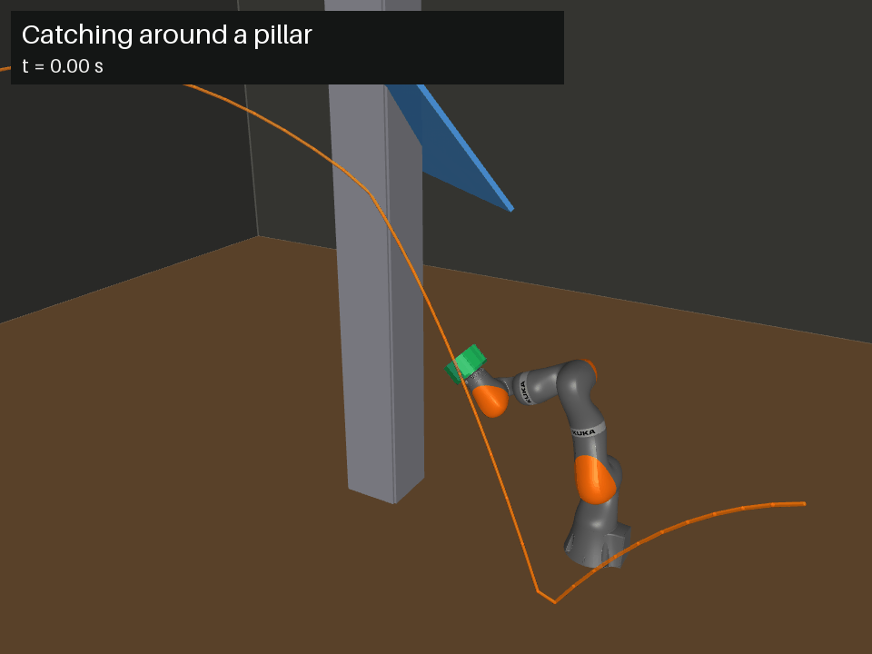

Catching around a pillar

Every 50 ms the arm re-plans on the latest prediction of where the ball will be, starting each move from its current position and speed. Before the bounce the prediction is split between outcomes, so it plans on the most likely one and corrects as the prediction sharpens.
The arm, its torque limits, and the ball near the arm are MuJoCo physics. The prediction can't sharpen while the pillar hides the ball from the camera.
Catch rates
| Setup | Oracle | Mean-only | Uncertainty-aware |
|---|---|---|---|
| Stage 2 + pillar (60 throws) | 49 | 40 | 40 |
| Stage 2 + pillar + occlusion (60) | 49 | 40 | 40 |
| Stage 3 + pillar + occlusion (60) | 40 | 33 | 32 |
| Pillar blocking the arm, velocity error 0.06 m/s (40) | 37 | 26 | 26 |
| Pillar blocking the arm, 0.15 m/s (40) | 37 | 23 | 20 |
| Pillar blocking the arm, 0.3 m/s (40) | 37 | 9 | 9 |
A catch means the ball stays in the cup. The oracle plans on the true ball path and marks the ceiling for this arm. In the blocking rows the pillar stands straight ahead inside the arm's reach: reaching around it to either side takes about 2 s and switching sides about 3.9 s, so the arm has to commit to a side early.
What the uncertainty-aware planner does
Both planners re-plan every 50 ms on the latest prediction and move smoothly from where the arm is, arriving 30 ms before the catch. Mean-only always steers toward the pose that catches the predicted path. The uncertainty-aware planner makes a contingency decision instead.
Each re-plan
- Draw 64 scenarios: possible ball positions at the catch time from the prediction, each with its catch pose.
- Candidate targets: the predicted path's pose, the center of each group of scenarios (an outcome, or a side of a blocking pillar), a pose covering all of them, and waiting.
- Score each candidate by the probability of scenarios it can still catch, and steer toward the best.
How a scenario is scored
- It becomes distinguishable when the shrinking prediction spread no longer covers its distance from where the arm is aiming: big corrections are known early, small ones late.
- It's caught if the arm, heading for the candidate until then, can still reach its catch pose in time. One within 3 cm of the aim needs no correction.
- Waiting always gives up at least one re-plan cycle, so the planner can't keep waiting for news that never comes in time.
Result
- It ties mean-only overall: 230 catches each across eight setups, with gains up to 3 and losses up to 3.
- It picks the predicted path's pose in 82–92% of re-plans. With moves taking about as long as the ball is in the air, there is almost no time to wait for information, so committing to the likeliest outcome is usually right.
- It should matter more once the arm has spare time, for example with moves that blend through waypoints instead of stopping at each one.